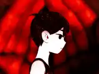

Setelah lulus SD, Taufik sempat kesulitan mencari SMP, kemudian orang tua nya menyarankan untuk masuk ke SMPIT Ukhuwah. Katanya itu "sekolah swasta bernuansa islami". Taufik pun akhirnya masuk ke SMPIT Ukhuwah.
Ternyata... itu pilihan buruk.
Baru awal masuk dia sudah dibully, mereka bilang "dia bisu" hanya karena Taufik menyendiri dan jarang berbicara. Saking parahnya, Taufik sampai minta pindah shift (waktu itu sekolahnya ada 2 shift / kelompok, A dan B. ini hanya berlangsung selama masa Covid 19). Taufik dapat shift B lalu pindah ke A.
Meski agak mending dikit, tapi tetap saja dia masih dibully. Puncaknya saat kelas 8, antara pertengahan atau akhir semester 1, waktu itu sedang jam eskul, Taufik duduk di resepsionis. Temannya bercanda "Taufik suka laki laki", rumornya menyebar cepat. Yang awalnya cuma candaan berubah jadi fitnah.
Satu angkatan membullynya. Saking parahnya, sesuatu di dalam diri Taufik akhirnya menyerah. Alter, yang selama ini hanya menemani di balik bayangan, akhirnya melangkah maju. Ia mematikan Taufik menggunakan 1000 pisau dan mengurungnya jauh di dalam BlackSpace. Sejak saat itu, tubuh itu bukan lagi milik Taufik.

Alter menaiki dan menduduki tahta nya di Red Space, mengambil alih tubuh Taufik.
Momen-momen sebelum tubuh Taufik diambil alih penuh oleh Alter.
9 tahun sekolah dijalani bukan dengan kenangan indah, tapi dengan penderitaan.